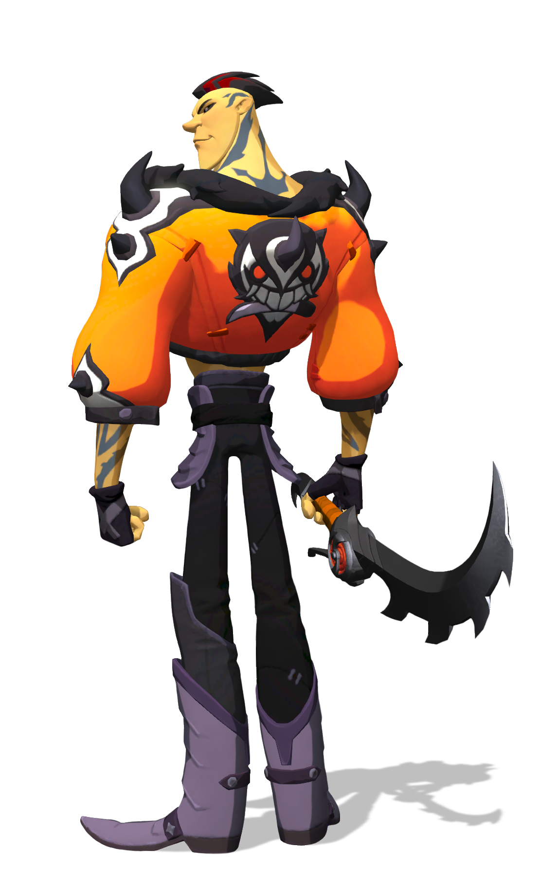

Scroll down to find out more about Ramsay!

A brief summary on Ramsay:
- Ramsay, is a character with an arogant ego, along with the wepons and skills to make losing opponents rage.
- His debuff's focus on 'poison', 'cracked armor', 'slow' and 'bleed' which are each deadly in their own way, but togehter they are an unstoppable trio.
- Some may call it 'over kill', but all that doesn't matter if the player using Ramsay does not know how to utilize Ramsay's skills in the best way possible.
- Ramsay's main ability is "Cut" which delivers a series of deliberate cust with a blade, and when you dodge it extends and has longer reach.
- You can upgrade "Cut" to 'slow' or 'bleed' people depending on your choice, and this can do increased damage is you activate the ability "Juju Fruit".
- The "Juju Fruit" ability coats your blade with poison, causing your next attacks to be full with poison.
- It can be upgraded to give you more stamina or to heaviliy poison or curse enemies.
- His "Rush" ability can be upgraded to 'bleed' enemies, or slow enemies.
- The best way to use Ramsay is to upgrade his "Cut" ability to 'bleed' enemies on hit, stacking them with a good dose of bleed.
- Ramsay is an assasin-type character so he has the mobility to quickly get in and out of a skirmish, but it takes up stamina.
- Some say Ramsay's play-style is based on dealing damage, poisoning your blade, annoying your enemy, and dodging their attacks.
- The 'dodging their attacks' comes into play because you have two ways to dodge enemy attacks: The first is the regular way that uses one stamina bar, and the other way is his "Rush" ability which has a really fast reload time.
- The addition of this ability kind of hints to the use of dodging, a lot in his play style, but it comes with one important factor that some players tend to overlook: Stamina.
- As you may already have noticed, stamina plays a big part in characters in Gigantic, but more so in some characters like Ramsay.
- Conserving stamina is essential, because even if you have all your other abilities ready to use your going to end up dead if you can't move or dodge enemy attacks.
- Sure you may be able to use the 'Rush' ability to avoid danger, but if your caught in a chase your bound to lose your life, or at least some HP if nothing is to be done.
- You can upgrade the "Juju Fruit" to give you a bit of stamina to boost your play.
- "Lets show them how its done!"
-Ramsay
-
“We call 'im “No-Grudge Ramsay” on account of 'im definitely, absolutely holding grudges.”
— Gribbsy, Street Kings Crew Member
Links
We'll see you on the airship!!